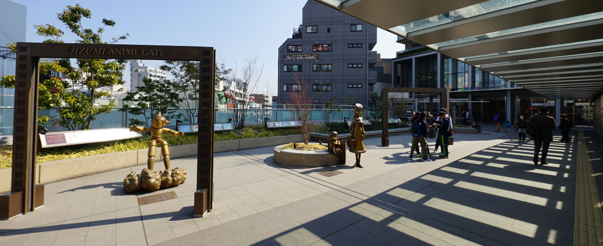

西武池袋線「大泉学園」駅 /
- バス19分「久保新田」停歩7分・自転車15分
ひばりヶ丘駅／バス5分「貝沼」停歩15分
改札を出ると大泉アニメゲートがお出迎え。鉄腕アトムや銀河鉄道999、あしたのジョーなどのキャラクターのブロンズ像が展示されています。
アニメの聖地、練馬区を象徴するスポットです。

「新座市」は埼玉県内屈指の文教エリアとして知られ、国の教育特区に認定されています。 地域と学校が連携しながら、子どもたちが地域社会の中で心豊かで健やかに育つ環境づくりに力を入れています。
「新座市」は埼玉県内屈指の文教エリアとして知られ、国の教育特区に認定されています。
放課後の子どもたちの居場所「ココフレンド」、日本を代表するアスリートによる「夢の教室」、
新座市内の全小学校・中学校の「コミュニティ・スクール」への指定など、地域と学校が連携しながら、
子どもたちが地域社会の中で心豊かで健やかに育つ環境づくりに力を入れています。

通院、入院にかかる医療費が無料！
こどもが心身ともにすこやかに育つために安心して診療を受けられるよう、保護者負担の軽減を図るため、こども医療費の助成制度を実施しています。
【対象 : 0歳児から中学校3年生のお子さまの保護者】
健康保険が適用される入院、通院及び調剤等の自己負担金が無料 ※高校生は入院費のみ無料
教育現場へのタブレット端末の円滑導入
令和元年12月に文部科学省から「生徒1人につき、1台タブレット端末を配備すること」を推進する発表がありました。 新座市は発表以前より、市として予算を計上し、利用環境の整備を行い、他の市町村と比較して円滑に教育現場のICT化を進めています。

エアコン設置率100%達成！
埼玉県内では、エアコンの整備が進んでいない市が多い中、新座市は、平成23年～平成24年の2年間でエアコン整備を完了。 子どもたちが集中して勉学に取り組めるよう教育環境の整備を進めています。
※補足：小学校全17校、中学校全8校
※イメージ
徒歩でも自転車でも、毎日の暮らしに欠かせない施設が行きやすい距離です。
もちろん車でのお出掛けもしやすい立地なので、週末は家族で外出する時間が増える、そんな住環境です。
片山小学校/約12分
第三中学校/約17分
新座市立栄保育園/約14分
イメージ
認可保育園 新座池田園
/約13分
美鈴幼稚園/約11分
片山幼稚園/約22分
ベルク池田店/約5分
サミットストア新座片山店
/約12分
ドラッグセイムス
新座片山3丁目店/約9分
いなげや新座野寺店
/約20分
イメージ
新座市立中央公民館図書室
/約19分
イメージ
新座セントラルキッズパーク
/約17分
西武池袋線「大泉学園」駅 /
ひばりヶ丘駅／バス5分「貝沼」停歩15分
改札を出ると大泉アニメゲートがお出迎え。鉄腕アトムや銀河鉄道999、あしたのジョーなどのキャラクターのブロンズ像が展示されています。
アニメの聖地、練馬区を象徴するスポットです。
グランエミオ大泉学園／約2800m
営業時間
10:00～21:00 (一部店舗により営業時間は異なります)
2023年9月8日に新たにロフトがオープンしたグランエミオ大泉学園。フードコートなど多くの飲食店があり、休日には多くの家族で賑わいます。
ゆめりあフェンテ／約2800m
営業時間
10:00～21:00 (一部店舗により営業時間は異なります)
食料品や洋服、ニトリや雑貨店などショッピングが楽しめるゆめりあフェンテ。1Fライフの営業時間は9:30～24:00と長い為、終電近くで帰ってきても利用できます。